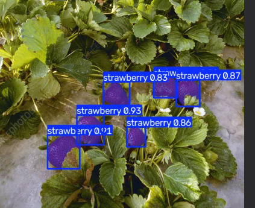

HarvestAI: Strawberry-Picking Robot
WIPA Monash DeepNeuron team project: a desktop-scale robotic arm with a camera that finds ripe strawberries and picks them on its own. Strawberries are a hard target for automation, every berry ripens at its own pace, bruises easily, and half of them sit behind a leaf, which is why the job is still done by hand. The MVP is three AI components working together: a computer-vision module that detects and classifies each berry’s ripeness from a live camera feed, a decision layer that turns a detection into a 3D grasp point, and a motion-planning module that moves the arm through it, with model training accelerated on HPC clusters. Target bar for the MVP is around 80% detection accuracy, 3mm arm positioning accuracy, and a full pick-and-place cycle in about 10 seconds. I’m on the software team building the perception module: curating and augmenting the strawberry image set, then training the object-detection model everything downstream depends on.